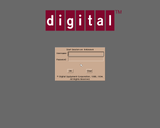
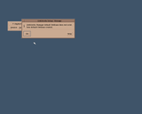
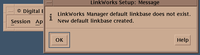

The DEC 3000 AXP was Digital Equipment Corporation's first family of desktop workstations and servers based on the 64-bit Alpha AXP architecture and the TURBOchannel bus. Introduced in November 1992 alongside the original DECchip 21064 (EV4) microprocessor, these systems represented the dawn of 64-bit RISC computing at Digital.
GXemul emulates the DEC 3000 Model 400 (code-named "Pelican" / "Sandpiper"), featuring:
The following guest operating systems and desktop environments have been verified to install and run:
OpenVMS AXP V1.0 was the initial commercial release of OpenVMS ported from VAX to the 64-bit Alpha architecture in November 1992. It runs natively on the emulated DEC 3000/400 hardware under the real SRM console firmware.
To install OpenVMS AXP 1.0 onto a harddisk image in the emulator, follow these instructions:
dd if=/dev/zero of=rz26.img bs=512 count=2050860
{
"gxemul": 1,
"name": "DEC 3000/400",
"machine": {
"type": "dec3000",
"model": "400",
"memory_mb": 64
},
"boot": {
"prom_emulation": false,
"rom": "media/rom/m400_v3_3.rom",
"nvram": "nvram.bin",
"skip_failing_tests": false
},
"drives": [
{
"file": "rz26.img",
"kind": "disk",
"id": 0,
"vendor": "DEC",
"product": "RZ26 (C) DEC",
"revision": "T386"
},
{
"file": "openvms_axp_1_0.iso",
"kind": "cdrom",
"id": 4,
"readonly": true,
"vendor": "DEC",
"product": "RRD42 (C) DEC",
"revision": "4.5d"
}
],
"display": {
"enabled": false
}
}
Note: Adjust the file paths to point to your actual disk, CD-ROM, and ROM files.
gxemul dec3000.json
Select the number of the desired language
[English (1)]: <Return>
Once the SRM console prompt (>>>) appears, issue the boot command targeting the CD-ROM drive on SCSI ID 4 (DKA400):
>>> boot dka400The SRM console loads the boot block, starts the secondary bootstrap, and switches into the OpenVMS AXP kernel:
INIT-S-OPEN... Starting OpenVMS AXP Operating System... %SYSINIT-I-TODRDA, system time from TODR valid...
PLEASE ENTER DATE AND TIME (DD-MMM-YYYY HH:MM): 01-JAN-1994 12:00
Target disk drive: DKA0:
Target disk volume label: ALPHAVMS010
Do you want to preserve or initialize? INITIALIZE
Select components to install [ALL]: ALL
Enter password for SYSTEM: OPENVMS123 Re-enter password for verification: OPENVMS123
%AXPVMSINSTALL-I-NORMAL, The OpenVMS AXP operating system installation is complete.The operating system shuts down cleanly and returns to the SRM console prompt (>>>).
>>> boot dka0After the startup scripts finish, log in as SYSTEM:
Username: SYSTEM Password: OPENVMS123 $ SHOW SYSTEM
  
DECwindows Motif is Digital's X11-based graphical workstation environment, providing the Motif Window Manager (DECW$MWM), DECwindows Session Manager (DECW$SESSION), DECterm terminal emulator (DECW$TERM), and full X11 client/server infrastructure.
DECwindows Motif V1.2 (DWMOTIF_AXP012) is found on CD #5 of the November 1994 Alpha Consolidated Distribution (VMS_AXP_SPL_AXPBINNOV945.iso). While DECwindows Motif 1.2 was officially qualified for OpenVMS AXP V1.5 and higher, Digital's engineers designed built-in bypass switches directly into the installation scripts, allowing it to install and run flawlessly on OpenVMS AXP V1.0.
To install DECwindows Motif and run the graphical desktop, follow these steps:
{
"file": "VMS_AXP_SPL_AXPBINNOV945.iso",
"kind": "cdrom",
"id": 4,
"readonly": true,
"vendor": "DEC",
"product": "RRD42 (C) DEC",
"revision": "4.5d"
}
$ IF F$TRNLNM("DECW$IGNORE_VERSION") .NES. "" THEN GOTO supported_version
$ min_version = "5.5-2"
$ if decw$alpha then min_version = "1.5"
$ vmi$callback check_vms_version decw$ 'min_version'
Define the override logical names in the system logical name table before launching the installer:
$ DEFINE/SYSTEM/EXEC DECW$IGNORE_VERSION TRUE $ DEFINE/SYSTEM/EXEC DECW$IGNORE_LMF TRUE $ MOUNT/OVERRIDE=IDENTIFICATION DKA400:
$ @SYS$UPDATE:VMSINSTAL DWMOTIF_AXP012 DKA400:[DWMOTIF_AXP012.KIT]Answer the installer questions:
%INSTALL-E-FAIL, failed to CREATE entry for ... -SYSTEM-F-GPTFULL, global page table is fullIncrease the global page table limits using SYSGEN:
$ MCR SYSGEN SYSGEN> USE CURRENT SYSGEN> SET GBLPAGES 150000 SYSGEN> SET GBLSECTIONS 2000 SYSGEN> SET GBLPAGFIL 4096 SYSGEN> WRITE CURRENT SYSGEN> EXITNote: If automating setup on the host disk image directly, these parameters reside in [SYS0.SYSEXE]ALPHAVMSSYS.PAR. Updating the 32-bit little-endian fields for GBLSECTIONS, GBLPAGES, and GBLPAGFIL applies the settings permanently.
$ DEFINE/SYSTEM/EXEC SYS$SHARE SYS$SYSROOT:[SYSLIB] $ DEFINE/SYSTEM/EXEC SYS$LIBRARY SYS$SYSROOT:[SYSLIB]
$ CREATE/NAME_TABLE/PARENT_TABLE=LNM$SYSTEM_DIRECTORY/EXEC DECW$SERVER0_TABLE
%LMF-W-NOLICENSE, no license is active for this software productand dismisses the graphical login box.
0c 00 e0 c3 (br zero, +0x34 — jump directly to success return)
01 00 1f 20 (lda v0, 1 — SS$_NORMAL)
with open("rz26.img", "r+b") as f:
f.seek(0x1fbef400 + 0x3b30)
f.write(bytes([0x0c, 0x00, 0xe0, 0xc3])) # br zero, +0x34
f.seek(0x1fbef400 + 0x3b64)
f.write(bytes([0x01, 0x00, 0x1f, 0x20])) # lda v0, 1
|
"display": {
"enabled": true,
"scale": 1,
"cards": 1
},
"slots": {
"0": "media/rom/pmagb-ba.bin"
}
>>> boot dka0Start the DECwindows infrastructure:
$ @SYS$STARTUP:DECW$STARTUPThe PMAGB-BA smart framebuffer window opens with the classic DECwindows Motif Login dialog. Enter username SYSTEM and password OPENVMS123. The slate blue desktop (#3F5469) appears, managed by the Motif Window Manager (DECW$MWM), with the DECwindows Session Manager (DECW$SESSION) menu bar offering:
DEC OSF/1 AXP (later known as Digital UNIX and Tru64 UNIX) was Digital's 64-bit Unix operating system for the Alpha architecture. Support for booting the DEC OSF/1 V1.2 installation kernel directly from disk and CD-ROM via the real SRM console callbacks is currently in active development.
For implementation details and architecture milestones, refer to the development notes in doc/dec3000-plan.md.